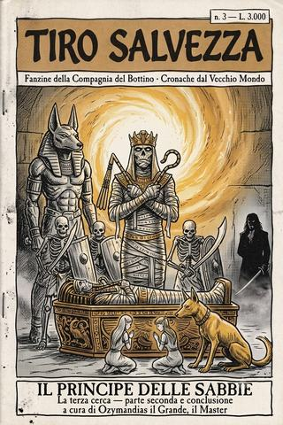

Tiro Salvezza · numero III
Il principe delle sabbie
Numero tre della fanzine della Compagnia del Bottino: la seconda parte della cerca in Sylvania. Un principe morto da tremila anni offre un patto, un conte morto da uno offre il suo fascino, e il registro dei morti arriva a otto — uno dei quali se ne va camminando.
- ≈ 28 min di lettura
- Ozymandias il Grande
- dalle partite a D&D 5ª ed.
- anche in EPUB, 2,9 MB
Editoriale — numero tre
TIRO SALVEZZA — fanzine della Compagnia del Bottino · rubrica «Cronache dal Vecchio Mondo»
Bentornati alla seconda metà della cerca peggiore. Nel numero due la torre di ossa aveva soltanto ucciso; in questo comincia a contrattare, e vi assicuro che è molto peggio.
Perché ci sono due modi, per il Vecchio Mondo, di prendersi qualcosa da un avventuriero. Il primo è ammazzarlo, ed è onesto. Il secondo è offrirgli un patto, o un dono, o un sorriso — e lasciarlo uscire dalla porta convinto di aver guadagnato qualcosa, quando in realtà ha appena firmato. In questo numero la Compagnia del Bottino incontra entrambi i maestri di questa seconda arte: un principe morto da tremila anni che la marchia in fronte in cambio della libertà, e un conte morto da uno che le regala anelli e la lascia andare — perché sa, come sanno tutti i creditori pazienti, che tornerà a riscuotere con comodo.
Il mio registro dei morti, alla fine di questo numero, segna otto. Ma il nome che mi toglie il sonno non è quello di chi è morto: è quello di chi non è morto abbastanza, e se n’è andato camminando dentro un portale di sabbia a servire un re per l’eternità. Per lui ho dovuto aprire una colonna nuova. Ho il sospetto che non resterà vuota a lungo.
Si ride ancora, tranquilli — c’è un mezz’elfo che diventa un cane, un drago scheletro coi capelli d’oro, e una compagnia che si contende a pezzi il cadavere di un necromante come bambini a una pentolaccia. Ma quando avrete finito, date un’occhiata alle vostre spalle. C’è un gentiluomo, laggiù nella nebbia, che vi ha appena sorriso. Nessuno l’ha riconosciuto, tranne una. E lei non ha detto niente.
— Ozymandias il Grande, il Master
Sommario
- Il principe delle sabbie (3ª cerca, parte seconda) — Un elfo risvegliato in mutande, un drago scheletro biondo, un principe di Nehekara che pretende un cuore e un teschio, e un conte vampiro che torna nel mondo mentre una sola persona, in tutta la compagnia, capisce chi è. La torre di ossa presenta il conto. (Conclusione della cerca cominciata nel n. 2.)
Linea temporale
Dove siamo nella campagna della Compagnia del Bottino. In grassetto ciò che leggerete in questo numero.
- 1ª e 2ª cerca — I pirati del Talabec — il fiume, i goblin, il sangue di troll. (nel n. 1.)
- 3ª cerca — La torre di ossa (parte prima) — Sylvania, la torre-necropoli, i doni di Tzeentch. (nel n. 2.)
- 3ª cerca — Il principe delle sabbie (parte seconda) — il patto di Ramotis, il drago biondo, il conte Manfred, il portale delle sabbie. (muoiono: «Barbecue» e Rotland «Scudo di platano» — che poi se ne va scheletro col principe. Registro morti: da sei a otto.)
Fili lasciati aperti a fine cerca: il conte Manfred Von Carstein è tornato nel mondo, e solo Ridley lo sa; la Compagnia porta fuori dalla torre sette armi maledette di Tzeentch e sette marchi di Ramotis; il talismano-rospo è consegnato al conte Darian, ma a cosa serva il rito del piromante nessuno l’ha chiesto. La campagna continua — e da qui in avanti, i conti arretrati cominciano a presentarsi.
Il principe delle sabbie
Cronaca della terza cerca della Compagnia del Bottino — parte seconda. Il patto che si pagò, e il gentiluomo che tornò nel mondo. A cura di Ozymandias il Grande, il Master.
Impero, contrada di Sylvania. Dentro la torre di ossa, dove i conti si saldano tutti.
Prologo — Ciò che la torre non aveva ancora chiesto
Vi ho lasciati, nel numero scorso, con la Compagnia del Bottino che usciva dalla stanza del cerchio spezzato stringendo in pugno i doni di un dio del Caos e la convinzione di aver fatto un affare. Il mio registro dei morti, allora, segnava sei. Vi avevo promesso che le cose si sarebbero messe peggio. Mantengo, come sempre, con puntualità.
Perché fin qui la torre aveva soltanto ucciso, che è la cosa più onesta che una torre di necromanti sappia fare. Da qui in avanti comincia a contrattare, e le contrattazioni, nel Vecchio Mondo, costano sempre più delle ferite. In questa seconda parte i nostri incontreranno un principe morto da tremila anni che offrirà loro un patto, e un conte morto da uno che offrirà loro il proprio fascino; e voglio che teniate a mente, mentre leggete, una regola che loro non hanno mai imparato e voi farete bene a non dimenticare: che al Vecchio Mondo i regali dei potenti non sono mai regali. Sono anticipi. E l’anticipo lo versa sempre chi crede di riceverlo.
Il registro, alla fine di questa cerca, segnerà otto. Ma due dei nuovi nomi non moriranno del tutto, e uno di loro se ne andrà camminando, il che — vi assicuro — è di gran lunga la cosa peggiore che possa capitare a un nome, in un registro come il mio.
Cominciamo. La torre ha ancora dei piani, e i piani hanno ancora degli inquilini.
Capitolo primo — L’elfo nella vasca
Proseguendo l’esplorazione, i nostri trovarono ciò che ogni torre di necromanti che si rispetti tiene in cantina: un laboratorio. Ampie vasche di piombo colme di liquami maleodoranti, dentro i quali galleggiavano corpi in vario stato di conservazione — da uno scheletro cui mancavano alcune ossa a un elfo alto, glabro e perfettamente integro, che i nostri, con quel tatto che li contraddistingue, presero subito a commentare come si commenta un pesce al mercato. Ed ecco che il pesce, offeso, si rianimò.
Emerse dalla vasca stiracchiandosi, vivo, nudo e furibondo: un elfo alto risvegliato da chissà quale sonno, che rifiutò con disgusto la tunica da adepto di Morr che Shava Nahlo gli offriva e se la adattò invece a mo’ di brache da spiaggia, guadagnandosi all’istante il soprannome con cui sarebbe passato alla storia della compagnia: Piedorf, il druido in mutande.1 Fu, per la cronaca, l’unico maschio elfo assennato che quella torre avrebbe visto, e lo dico con cognizione di causa, perché il suo primo atto da resuscitato fu mettersi a litigare sul proprio lignaggio.
Qui devo fermarmi a descrivervi una scena che, come Master, considero tra le più belle che abbia mai arbitrato, e che riassume la Compagnia del Bottino meglio di qualsiasi battaglia. In una torre infestata di non morti, in Sylvania, di notte, tre elfi — Piedorf, Shava Nahlo ed Endia — si misero a discutere di nobiltà. Piedorf millantava un’avita discendenza; Shava lo smontava rivelandosi più umile ma di casata più pura; Endia calava l’asso, sventolando parentele con le Guardie della Fenice di Ulthuan, l’élite del regno. Nel frattempo i membri umani della compagnia, semplicemente disgustati e annoiati, si erano messi a giocare a carte in attesa che «lor signori rekkiapunta» finissero la gara.2 Vi giuro che la lasciai correre. Avevo dei morti che camminavano pronti a entrare in scena, e li tenni fuori dalla porta per qualche minuto, perché certe scene un Master non le interrompe: le contempla.
Poi, naturalmente, i morti entrarono. Una stanza gelida risvegliò gli spettri dei tumuli — resti cadaverici posseduti da spiriti inquieti, con antiche armi e un rancore più antico ancora —, e furono guai, di quelli seri, sedati solo dal bastone demoniaco di Piedorf, che si rivelò capace di curare quanto di far male.3 Fu quella la sera in cui Piedorf ed Eryn, in cerca della provenienza di certi rumori, mollarono una pedata frustrata a un vecchio armadio tarlato, che cedette rivelando un passaggio segreto: una scala a chiocciola che saliva e scendeva ai piani della torre. La Compagnia del Bottino aveva trovato la sua strada verso l’alto. Verso, cioè, il principe.
Capitolo secondo — «Qui giace Oggunon»
Ai piani superiori la torre alzò la posta, e cominciò a giocare con le porte. Ne trovarono una di solida quercia rinforzata, cesellata di teste, arti e bocche mostruose, con sopra, in lingua draconica, un’iscrizione che il mezz’elfo Gionatan — che di cultura ne aveva, checché ne pensassero gli elfi veri — riuscì a leggere: «Qui è Oggunon che giace, la disperazione a chi ne violerà il luogo.»
Ora, mettetevi ancora una volta al mio posto, dietro lo schermo, e osservate la Compagnia del Bottino leggere una porta con su scritto, in sostanza, «se apri, muori». Non discussero se aprirla. Discussero come. È il paradosso che vi ho promesso fin dal primo numero, e qui lo vedete al lavoro nella sua forma più pura: Gionatan si intestardì a forzarla, fu quasi fulminato da una trappola magica che gli incenerì il martello, e i compagni — dopo avergli dato del salame per aver voluto aprire una porta con scritto «muori» — non trovarono di meglio che aiutarlo a riprovarci, servendosi della porta stessa, staccata dai cardini, come isolante. Dietro, un pozzo di metallo con una botola incisa di orrori. La aprirono, com’era scritto nel loro destino, e sotto comparvero due sole parole, «siete» e «morti», seguite da una massa carnosa di bocche, tentacoli e occhi alla rinfusa che emerse gorgogliando e cominciò a mordere, succhiando il sangue come un enorme parassita.4 La ferirono a morte, e la cosa sprofondò nel pozzo; ma il morso lasciò negli sventurati una debolezza e un dubbio agghiacciante che si sarebbero portati dietro a lungo: e se fossero infetti? Se quel morso avesse in sé la piaga? Non era un vero vampiro, quello — ma in Sylvania la parola «vero», davanti alla parola «vampiro», conta poco, e i veri sarebbero arrivati presto.
Fu poco prima, o poco dopo — in una torre dove il gruppo si divideva di continuo il «prima» e il «dopo» perdono senso — che la Compagnia pagò il settimo nome. Da una porta divelta emerse un colossale scimmione puzzolente, un’altra creatura cucita da parti di cadavere, parte ogre e parte fiera delle montagne, e con i suoi pugni travolse chi gli si parò davanti. Cadde, in quello scontro, «Barbecue», il piromante umano — colui che nel numero scorso aveva sbeffeggiato la debolezza di Sutura, e che ora scopriva, troppo tardi, che non tutti i mostri di quella torre erano tenuti insieme con lo spago. Si era gettato contro i nemici col coraggio ardente che lo aveva sempre contraddistinto nella sua breve e sfortunata vita; e siccome non aveva la tempra del guerriero, fu spiaccicato dalle creature non morte, e i compagni lo vendicarono, e poi — perché sono la Compagnia del Bottino, e il lutto e il saccheggio, in loro, sono lo stesso gesto — ne saccheggiarono i resti.5 Sette.
Capitolo terzo — Il principe delle sabbie
E arriviamo alla sala che dà il titolo a questo numero. Una lunga camera sepolcrale, sarcofagi allineati nelle nicchie, e in fondo uno più imponente di tutti, laccato e dipinto, l’unico. Le due «femmine alfa» della compagnia — la druida Endia e la ladra Shava Nahlo, che davanti a un sarcofago decorato provano ciò che gli altri provano davanti all’oro — vi si fiondarono e ne ribaltarono il coperchio con l’entusiasmo di due tombarole in erba. Dentro, una regale mummia perfettamente conservata, avvolta in bende coperte di segni, rivestita di gioielli, con in fronte una corona ad aspide d’oro rosso e in pugno il pastorale e il flagello: le insegne dei Re dei Sepolcri di Nehekara, il regno delle sabbie, estinto da millenni molto a sud, oltre Estalia e Tilea, oltre le montagne degli orchi — la culla, si dice, dell’antica civiltà umana.6
Come in tutte le tombe che si rispettino, svegliare il morto non portò nulla di buono. Il re si mosse, e dalla gola rinsecchita salì un comando: «Miei servi, destatevi.» Tutti i sarcofagi si aprirono, e ne uscì la guardia del sepolcro: scheletri armati di scudo a torre e spada falcata, un capitano in armatura dorata, e torreggiante su tutti un Ushabti, una statua vivente di tre metri con la testa di sciacallo, immagine delle antiche divinità del deserto. Gli altri compagni, con la solidarietà che li distingue, erano già svaporati fuori dalla stanza, lasciando le due tombarole al loro destino.
Il destino, però, prese una piega che nessuno — io per primo, dietro lo schermo — aveva previsto. Perché quando ogni via d’uscita fu chiusa e ogni colpo fu vano, Shava Nahlo fece una cosa che alla Compagnia del Bottino non riesce quasi mai: pensò. Si inginocchiò, sottomettendosi al re morto, e a bassa voce convinse una furibonda Endia a fare lo stesso. Il principe — Ramotis III, di Khemri, della seconda dinastia, come apprendemmo poi — vide in quel gesto qualcosa che i suoi occhi vuoti ricordavano da tremila anni: l’omaggio dei sudditi. E fermò la strage.7
Poi contrattò, perché anche i re morti contrattano. Instillò nei nostri un compito: portargli il teschio e il cuore del necromante che governava quella torre, e allora lui e la sua corte sarebbero stati finalmente liberi di tornare a Zandri, la grande città fluviale di Nehekara. E a sigillo del patto li marchiò, a uno a uno, con gemme scolpite a forma di scarabeo poste sulla fronte, pronunciando su ciascuno una maledizione per il caso del tradimento: divorati da mille scarabei, chi avesse mancato alla parola. A Eryn Goldenleaf, che si prostrò con un servilismo tale da meritare un trattamento speciale, toccò un rubino a forma di scorpione, e la promessa di mille anni di tormento. A Gionatan, che strisciò ai piedi del capitano della guardia con arte tale da convincerlo, toccò un collare d’oro massiccio e una diversa promessa: che, deludendo il suo signore, sarebbe stato mutato nella forma che più lo rappresentava. Tenetela a mente, questa. Torna prima di quanto crediate, e non è un complimento.
Capitolo quarto — Il drago biondo
Ai piani più alti, tra le macerie di una torre che qualcosa di immenso aveva devastato, i nostri trovarono un tesoro e, sepolto nel tesoro, l’enorme scheletro alato di un drago. Qualcuno, con un residuo di buon senso, osservò che in una torre pregna di necromanzia era plausibile che si rianimasse. Gli altri avevano il neurone dell’avventuriero grippato sul mucchio d’oro, e non ricevevano altri impulsi. Si rianimò.
Ciò che seguì è, a mio parere di arbitro, il più bel disastro di tutta la cerca, e devo raccontarvelo per gradi perché per gradi lo vissi anch’io, con la testa tra le mani. Il drago scheletro emanava un’aura di terrore che travolgeva la linea di combattimento; ogni volta che lo abbattevano, le fratture nelle ossa si risaldavano; e i nostri, invece di reagire, fecero ciò che sanno fare meglio: si misero a discutere. Discussero il piano di attacco, discussero se fuggire, discussero se saccheggiare, e mentre discutevano la creatura risucchiava loro, in silenzio, la forza vitale, indebolendoli poco a poco — e loro continuavano a litigare, perché il cervello dell’avventuriero medio non gestisce più di un evento alla volta, e la discussione ne saturava già uno.8 Persero forza, e ancora forza, e ancora, e non se ne accorsero, finché lo scheletro del drago non sviluppò — e vi giuro sul mio schermo che è andata così — una lunga chioma dorata di energia arcana. Un drago scheletro biondo. Fu, credo, il richiamo a quel leggendario prodigio dai capelli d’oro a scuotere finalmente le loro menti giocose e a spingerli, all’unisono, all’attacco.
E fu lì che la maledizione di Ramotis mostrò il suo doppio taglio. Colpito a morte dall’ala del drago, Gionatan sentì il collare d’oro accendersi, e una luce ieratica lo avvolse mutandone le fattezze: quando la luce si spense, al suo posto c’era un possente sciacallo gigante, corazzato d’oro e lapislazzuli, la forma che — secondo il capitano della guardia — più lo rappresentava. Da mezz’elfo che si spacciava per elfo, a cane. Ci sarebbe da riderne, e infatti ne risi; ma la beffa aveva un artiglio, perché quelle zanne di sciacallo si rivelarono letali per le ossa impregnate di necromanzia, e fu Gionatan degli sciacalli — così lo chiamarono da allora — a rosicchiare fino alla fine il drago biondo, mentre l’halfling saggio lo indeboliva da lontano e il violino di Tzeentch, tra le mani di Eryn, faceva più danni agli amici che ai nemici. Il mostro cadde. Il tesoro fu diviso. E almeno uno di loro, ora, abbaiava.
Capitolo quinto — Il baratro
Sotto la torre si apriva un baratro, e in fondo al baratro brulicavano i morti. Fu lì, mentre i nostri escogitavano modi sempre più improbabili di attraversarlo — una teleferica di corda, un nano usato come carrucola, e a un certo punto una graziosa elfa appesa alle brache di un nano, spettacolo mai visto in mille anni di storia e disonorevole per entrambe le razze coinvolte —, che entrò in scena l’ultima new entry di questa cerca: Ardal, ladra solitaria, che aveva seguito le tracce della compagnia dopo averle rubato i cavalli, e che si aggregò con il pragmatismo di chi tratta ogni informazione a peso d’oro.9 La banda dei ladri era ora al completo: tre paia d’occhi di gatto, Ridley, Ardal e Shava Nahlo, che nel prosieguo avrebbero saccheggiato con una sincronia che il gruppo non raggiunse mai in battaglia.
Al centro del baratro, su un pilastro di pietra, li aspettava l’oggetto di tutta questa fatica: una statuetta di metallo a forma di rospo bicefalo, brutta come solo le cose potenti sanno essere brutte. Era il talismano del conte. Era, cioè, il motivo per cui sei — presto sette, presto otto — dei loro erano morti. La afferrarono con la stessa noncuranza con cui si prende una moneta caduta, perché per la Compagnia del Bottino un talismano leggendario e una moneta caduta hanno esattamente lo stesso valore: quello di essere raccolti.
Il baratro, prima di lasciarli andare, si prese la sua parte di risate e la sua parte di sangue. Endia precipitò tra i cadaveri e ne uscì viva per miracolo e per levitazione altrui; un golem di lapidi e un cubo gelatinoso comparvero dai corridoi laterali e furono abbattuti a fatica. Ma di tutte le cose che accaddero in quel baratro, quella che il mio registro attendeva la racconto tra poco, perché merita il suo capitolo, e perché è il momento in cui un nome, invece di finire, ricomincia nel modo peggiore.
Capitolo sesto — Il cuore del necromante
Restava da saldare il patto col principe, e per saldarlo restava da uccidere il padrone di casa: il necromante, quello studioso di Nagash che nel numero scorso era sfuggito mutandosi in polvere. Lo ritrovarono nella sua macelleria, e lo scontro finale fu, come tutti gli scontri finali della Compagnia del Bottino, meno una battaglia che una rissa mal coordinata in cui ciascuno faceva per sé. Il necromante si trincerò dietro un muro di ossa aguzze che Shava Nahlo, con un’iniziativa di cui vado orgoglioso per quanto è insensata, potenziò — versandoci sopra l’essenza necrotica che si era raccolta per strada, nella speranza di ripetere chissà quale successo, e ottenendo l’unico risultato prevedibile: un muro di ossa non morte molto più potente e aggressivo di prima.10 Perché se c’è una costante, in questa compagnia, è che ogni tanto qualcuno migliora attivamente la posizione del nemico, con le migliori intenzioni.
Ciononostante — e questo è il piccolo miracolo che rende la Compagnia del Bottino, malgrado tutto, vincente — il necromante cadde. Lo abbatterono con lo sforzo combinato di chi finalmente smette di litigare perché ha capito che stavolta ci lascia la pelle, e sopra il suo corpo la compagnia diede il meglio di sé nel senso peggiore: i due nani si contesero gambe e braccia, Piedorf ed Endia gli aprirono la cassa toracica in cerca del cuore, Shava Nahlo lo ficcò in un canopo riciclato dopo essersi litigata i bulbi oculari con Ardal e le ossa del piede con Gionatan. Teschio e cuore. Il prezzo del patto. Confesso che, guardandoli contendersi le parti anatomiche di un uomo con l’allegria di bambini a una pentolaccia, non capii cosa se ne volessero fare; ma era così divertente vederli litigare, che li lasciai fare. È, in fondo, tutto il mio mestiere.
Capitolo settimo — Il conte Manfred
Ed è qui che entra il gentiluomo, e la cronaca cambia registro un’ultima volta. Mentre spolpavano i cadaveri, una nebbiolina cominciò a coalescere alle loro spalle, come fumo dalle lanterne di grasso umano alle pareti. Quando se ne accorsero era tardi: dalla nebbia si era solidificata una figura elegante, vestita fuori moda da almeno un secolo, sciabola al fianco e sorriso smagliante di canini appuntiti, che si inchinò con dimenticata cortesia e si presentò. «Vi ringrazio, mie signore, di avermi liberato dall’imbarazzante presenza del necromante — voi e i vostri umili servi.» Era il conte Manfred Von Carstein, ultimo reggente legittimo della contea di Sylvania.
Una sola, in tutta la compagnia, capì cosa avevano davanti. Ridley, nascosta nella stanza attigua, zitta al punto da silenziare il proprio battito, ricordò la figura: l’ultimo dei conti vampiro, abbattuto — così dice la storia imperiale — oltre un secolo prima nella battaglia di Hel Fenn, quando gli eserciti delle contee e due ordini cavallereschi spezzarono le armate della non-morte, e il maestro dei Templari del Lupo Bianco, Konrad il pallido, lo affrontò in singolar tenzone. La storia dice questo. La storia dice anche, sottovoce, che il corpo del conte non fu mai ritrovato sul campo.11 E ora il corpo era lì, in piedi su un tavolo da macellaio, che si inchinava alle due elfe e ne baciava — quasi — la mano.
Gli altri, assai più ignoranti di Ridley in storia imperiale, non capirono nulla, il che li salvò dal terrore e li condannò all’imprudenza. Shava Nahlo, ipnotizzata dal carisma e dai fluenti capelli del conte, faticò a resistere al suo fascino da bel tenebroso — senza che il vampiro esercitasse alcun potere: pura, spontanea resa dell’elfa infatuata. E i tre bardi-servitori — Eryn, Piedorf e Gigi d’Alessios — pensarono bene di intromettersi in una conversazione tra nobili accampando meriti e pretese, violando ogni etichetta, e furono rimessi al loro posto di inferiori da un potere magico che li fece contorcere a terra dal dolore. Manfred donò due splendidi anelli alle elfe — Shava per poco non gli chiese di sposarla —, suggerì con cortesia che se ne andassero al più presto ora che avevano il loro talismano, e si ritirò da un’altra porta, chiudendola dietro di sé. Non a chiave. I gentiluomini non chiudono a chiave: sanno che tornerete.
Il trio dei servitori, ovviamente, lo seguì — a caccia di bottino, o di qualcosa di più — e per il disturbo un Vargheist, torreggiante incrocio di vampiro e pipistrello, piombò su Gigi d’Alessios, che si salvò per puro caso e per la disperazione delle gambe. Ma il conte, ormai, era altrove. Libero. Nel mondo. E nessuno lo sapeva, tranne una ladra umana che aveva scelto, saggiamente, di tacere.
Capitolo ottavo — Il portale delle sabbie
Restava il patto da onorare, e il baratro da riattraversare per tornare dal principe, e fu lì che si compì l’ottavo nome. Nel trasbordo sopra l’abisso infestato, il valoroso Rotland «Scudo di platano» — nano sventratore, così detto pur non avendo né scudo né platano addosso — perse la presa all’ultimo e precipitò tra gli scheletri e gli zombie del fondo. Trovò, come Cyccios e Fenyr prima di lui, la sua morte gloriosa. Ma la sua storia non finì lì, e questo è il punto in cui la maledizione di Ramotis mostrò l’ultimo dei suoi denti.12
Perché Rotland era uno dei marchiati. Una volta, il patto gli aveva salvato la vita; ma il secondo fallimento, per i servi del re dei sepolcri, non si perdona. Lo scheletro del nano si rianimò tra i cadaveri e — ignorando ogni altra cosa, ignorando i compagni, ignorando persino la gloria — cominciò a risalire, ineluttabile, con un solo scopo: raggiungere il suo signore e servirlo in eterno. I compagni lo seguirono fino alla sala del principe, piuttosto spaventati dal pensiero di quale destino, con marchi identici sulla fronte, aspettasse ciascuno di loro.
Offrirono al capitano della guardia il teschio e il cuore. Il capitano liberò Gionatan dalla maledizione dello sciacallo — restituendogli la forma, se non del tutto la dignità — e depose i resti del necromante nell’unico sepolcro ancora chiuso, ricomponendone il cadavere, che si ridestò servo. Allora il sacerdote liche mutò il sepolcro di Ramotis in un portale delle sabbie: un lucente vortice di polvere calda che avrebbe ricondotto gli esuli, dopo tremila anni, a Zandri. Il principe vi entrò con la sua corte. E dietro di loro, ultimo, ci entrò lo scheletro di Rotland, che i compagni salutarono con una lacrimuccia sincera e imbarazzata, perché non c’è modo elegante di dire addio a un amico che se ne va camminando dentro la propria dannazione.
I nostri fuggirono verso l’uscita, la finestra da cui erano entrati giorni prima, stanchi, pesti, con molti caduti e un rospo di metallo. Attraversarono di nuovo il fiume, e nella notte videro le cose ultime di Sylvania: un muro di foschia che si alzava lungo il confine della contrada maledetta, come a chiuderla; e in lontananza, sopra la torre, strani lampi salire al cielo e disegnare figure orribili tra le nubi. Gigi d’Alessios, che ancora sentiva i canini del conte vicino al collo, li trascinò via prima che accadesse qualcosa di peggio. E qualcosa di peggio, in Sylvania, c’è sempre.
Epilogo — Il conto
Tornarono a Talabheim, dal conte Darian, e consegnarono il talismano, e riscossero la ricompensa, e con ogni probabilità la litigarono. La cerca era compiuta. Il piromante di corte avrebbe avuto il suo rospo bicefalo per il suo rito, e cosa quel rito servisse a fare nessuno di loro pensò di chiederlo — ma io me lo segnai, perché i riti dei maghi di corte, come i doni dei demoni, sono anticipi, e prima o poi presentano il conto.
E il conto, appunto. Nella colonna del bottino: enorme, e conteso fino all’ultima moneta. Nella colonna dei marchi: sette scarabei sulle fronti, un rubino a forma di scorpione, e una compagnia che portava fuori da quella torre più maledizioni di quante ne avesse portate dentro. Nella colonna dei doni avvelenati: il violino di Tzeentch e i suoi sei fratelli, e gli anelli di un vampiro al dito di due elfe. E nella colonna che tengo solo io, quella dei nomi, il totale era salito da sei a otto: Barbecue sotto i pugni dello scimmione cucito, e Rotland Scudo di platano nel baratro — che però non è morto del tutto, e questa, ve l’ho detto in apertura, è la cosa peggiore che possa capitare a un nome.
Ma il conto vero, quello che non compare in nessuna delle mie colonne, uscì dalla torre con loro senza che se ne accorgessero, e lo porta ancora oggi. Perché in fondo a quella cerca il conte Manfred Von Carstein è tornato nel mondo, dopo un secolo, e cammina di nuovo per Sylvania e oltre; e di tutta la Compagnia del Bottino, una sola persona lo sa, e ha scelto di non dirlo. Sono cose così che, in una campagna, si pagano tardi e care. Ma questo, come sempre, a suo tempo — e sarà un tempo di gran lunga peggiore di questo, se la conosco, la mia gente. E la conosco.
Per ora hanno il loro oro, le loro maledizioni, i loro doni del Caos e i loro morti. Ridono, mentre tornano verso casa lungo il Talabec. È giusto così. Io tengo il registro chiuso sotto il braccio, dalla mia parte dello schermo, e non dico niente. Un Master offre le porte. Sono loro che le aprono. E ne restano, di porte, in questa campagna. Molte più di quante immaginino.
Fine della terza cerca.
— Ozymandias il Grande, il Master
Da dove vengono queste storie
Queste non sono cronache ritrovate in una vecchia fanzine ingiallita, e «Ozymandias il Grande» — il Master che le firma — non le ha scritte davvero da solo. Sono nate dove nascono tutte le storie migliori: attorno a un tavolo.
I resoconti di questo volume vengono dai tavoli di gioco del Brainstorm Club, associazione di giochi di ruolo e da tavolo di Faenza (RA) — e, in particolare, dal tavolo dei più giovani. Dietro ogni canaglia di queste pagine — il druido che si trasforma nel momento sbagliato, il paladino che fa scattare ogni trappola, il bardo che suona quando dovrebbe tacere, il nano sventratore che carica da solo e non torna — c’è un ragazzo o una ragazza in carne e ossa, seduto a un tavolo vero, che una sera ha deciso cosa il suo personaggio avrebbe fatto. Il resto è soltanto trascrizione, con qualche bugia aggiunta per amore del ritmo.
Al Brainstorm Club si gioca da più di trent’anni, e non a un gioco solo: oltre a Dungeons & Dragons, ci si siede a Brancalonia, a Rogue Trader, ad Apocalypse World e a molti altri giochi di ruolo. Ma queste storie hanno una particolarità: nascono da una campagna condotta con i giocatori più giovani del club — bambini e ragazzi che, oltre a giocare, imparano a dirigere il gioco: a costruire mondi, a tirare i dadi dietro lo schermo, e a raccontare storie come queste.
Il club accoglie nuovi giocatori da tutta la Romagna, e tiene sessioni dedicate ai più giovani — bambini dai 9 ai 15 anni, ragazzi dai 16 ai 19. Se una di queste sedute vi ha strappato una risata (e magari un pizzico di dispiacere per l’ennesimo sventratore finito nel paiolo), ricordate che è cominciata con un tiro di dado e con qualcuno che, a un tavolo di Faenza, ha detto: «il mio personaggio, invece, fa così».
Brainstorm Club — Faenza (RA)
brainstormclub.it · info@brainstormclub.it
Note
«Piedorf» resterebbe, di suo, uno dei tanti nomi che questa compagnia affibbia al volo, se non fosse per il bastone che portava — un bastone demoniaco che i suoi chiamavano «dell’evoluzione», capace di guarire e di ferire con la stessa indifferenza. Che fine abbia fatto Piedorf, e come quel bastone sia poi finito nelle mani di un altro druido di nome Zeno — se rubato, trovato o barattato — è una di quelle domande a cui la campagna non ha mai dato risposta, e a cui io, per rispetto del mistero, mi guardo bene dal darne una. Chissà.↩︎
È il paradosso permanente della compagnia: i suoi elfi litigano sulla purezza del sangue con la stessa energia con cui gli umani litigano sul bottino, e nessuno dei due gruppi si accorge di quanto sia identico l’altro. La superiorità, che sia di lignaggio o di scaltrezza, è la sola religione davvero condivisa a quel tavolo. Il «rekkiapunta» è un elfo che ricorda a tutti la propria; ma a ben guardare, di rekkiapunta, in quella compagnia, lo erano tutti, ciascuno a modo suo.↩︎
Gli spettri dei tumuli non sono i morti sciatti che infestano la campagna, ma antichi guerrieri gelosi delle proprie tombe, e il loro rancore ha la pazienza dei secoli. Che a sedarli bastasse il bastone di un elfo appena tirato fuori da una vasca di formalina è, ripensandoci, uno di quei colpi di fortuna con cui la Compagnia del Bottino ha sistematicamente sostituito la competenza. Ne hanno avuti molti. Prima o poi finiscono. Ma non in questo numero.↩︎
La creatura del pozzo di Oggunon non ha nome nei bestiari che conosco, e va bene così: certe cose è meglio non nominarle, perché nominare è un modo di invitare. Bocche, occhi e tentacoli assemblati senza un disegno: la necromanzia, quando si annoia, gioca. Il morso succhiava sangue come un parassita, e lasciò nei feriti un dubbio che nel Vecchio Mondo vale quanto una condanna: quello di poter diventare, col tempo, ciò che li aveva morsi. Un dubbio che, per una compagnia che aveva appena stretto la mano a un conte vampiro, non era affatto peregrino.↩︎
Con Barbecue se ne andò il secondo dei maghi da fuoco della compagnia, dopo Fieraman, e comincio a sospettare che il collegio delle fiamme, a Talabecland, dovrebbe rivedere i criteri di ammissione — o quantomeno avvertire gli allievi che l’aspettativa di vita di un piromante, in questa compagnia, si misura in sessioni e non in anni. Lo vendicarono, il che è già più di quanto abbiano fatto per parecchi altri; poi lo saccheggiarono, il che è esattamente quanto hanno fatto per tutti. Nel loro cordoglio, le due cose non sono mai state in contraddizione.↩︎
Nehekara è il regno delle sabbie del profondo sud, morto da millenni e ciononostante più vivo di quanto un regno morto dovrebbe essere, perché i suoi re non si rassegnarono a restare tali. I Re dei Sepolcri governano cadaveri con la stessa burocrazia con cui in vita governavano sudditi; e un Ushabti — colosso di pietra, legno e ossa con la testa d’uno degli dèi-bestia del deserto — è ciò che accade quando una civiltà decide che nemmeno gli dèi debbano avere il permesso di andarsene. Che un pezzo di quel regno fosse finito a fare la guardia in una torre di Sylvania è un mistero che la campagna non ha spiegato, e che il principe, comprensibilmente, non gradiva.↩︎
Sottolineo la scena perché è un unicum: è la sola volta, in tutta questa cerca, in cui la sopravvivenza della compagnia dipese non da un colpo di fortuna né da un colpo di spada, ma da un gesto di umiltà — per giunta simulata. Shava Nahlo si inginocchiò per calcolo, non per rispetto, e il calcolo funzionò, il che le insegnò la lezione sbagliata, e cioè che l’astuzia paga sempre. In Sylvania, ogni tanto, paga. Ma il conto lo tiene sempre qualcun altro, e lo presenta quando meno te lo aspetti — con gli interessi delle sabbie.↩︎
Ho contato, quella sera, i punti di forza vitale che la compagnia perse mentre discuteva anziché combattere, e ho smesso di contarli non per pietà ma per economia d’inchiostro. È la loro firma, questa: la riunione perpetua, il parlamento aperto in ogni momento, comprese le sale in cui una creatura sta letteralmente succhiando loro la vita mentre deliberano sul da farsi. Il drago biondo — perché di questo si trattava, di uno scheletro che a furia di assorbire energia arcana mise una chioma d’oro degna di leggenda — per poco non li uccise tutti col solo aiuto della loro voglia di parlare.↩︎
Ardal si aggregò come si aggregano i gatti: non per lealtà ma per convenienza, e senza mai fingere il contrario, il che ne fa, paradossalmente, il membro più affidabile della compagnia — perché di un socio che ti dice apertamente che è lì per l’oro sai sempre esattamente cosa aspettarti. Aveva seguito la compagnia rubandone i cavalli; se li fece poi ripagare, in moneta sonante, per restituirli. È la prova migliore che avesse capito, di quella gente, l’unica cosa che contava: che con loro anche il furto è un servizio, purché glielo si fatturi.↩︎
Merita un monumento, questa iniziativa, perché condensa un’intera filosofia. Posta di fronte a un muro di ossa non morte, Shava Nahlo non pensò «come lo abbatto», ma «cosa succede se ci verso sopra dell’altra energia necromantica». Ciò che succede, per chi se lo stesse chiedendo, è che il muro diventa più forte. È il genere di esperimento che solo una compagnia priva del tutto di istinto di conservazione conduce sul campo, in mezzo a uno scontro, con la stessa serenità di un alchimista in laboratorio. Funzionò, nel senso che rese tutto più difficile. Per loro. Vinsero lo stesso, perché a volte gli dèi, davanti a tanta audacia, si distraggono dal ridere.↩︎
Qui la cronaca di corte imperiale e la mia divergono, ed è giusto che sappiate da che parte sto io. Gli annali ufficiali raccontano Hel Fenn a modo loro, e nomi e meriti se li assegnano i vincitori, come sempre; altre versioni collocano la caduta dell’ultimo Von Carstein in altri campi e per altre mani. Io, da cronista, riporto ciò che Ridley ricordava, perché è ciò che la compagnia visse: un conte che la storia dava per morto oltre un secolo prima, e un corpo mai ritrovato. Che la storia ufficiale sia imprecisa non mi riguarda. A me riguarda che il conte, quella notte, era vivo abbastanza da inchinarsi. Il resto è materia da eruditi, e gli eruditi, si sa, non erano nella torre.↩︎
Delle molte morti che ho contato in questa cerca, quella di Rotland è la sola che mi tolga il sonno, e non per come avvenne — un nano sventratore che cade in un baratro trova esattamente ciò che cercava —, ma per come non finì. Perché un morto, nel mio registro, è un nome che si chiude; e Rotland non si chiuse. Si rialzò, e camminò, e seguì il suo signore dentro un portale di sabbia verso una servitù senza fine, ignorando i compagni che l’avevano amato. Ho una colonna per i morti. Non ne ho una per quelli che se ne vanno camminando. Ho dovuto inventarla per lui, e l’ho lasciata aperta, perché ho il sospetto che, prima della fine della campagna, non sarà l’unico a costringermi a tenerla.↩︎
Preferisci leggerlo nel tuo lettore, o portartelo offline?
⤓ EPUB 2,9 MB